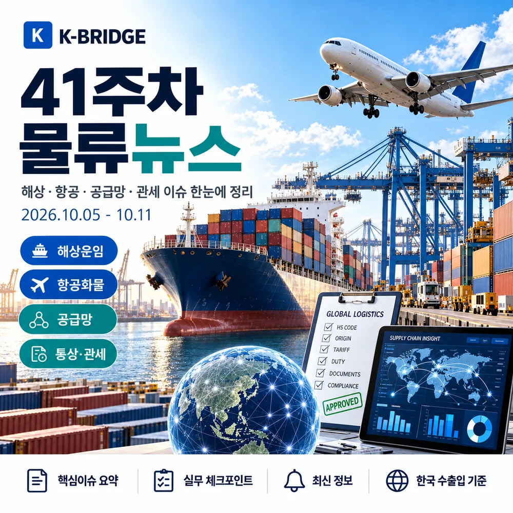
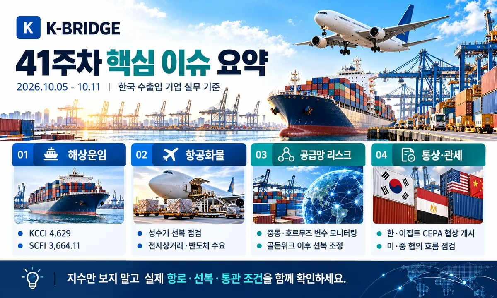
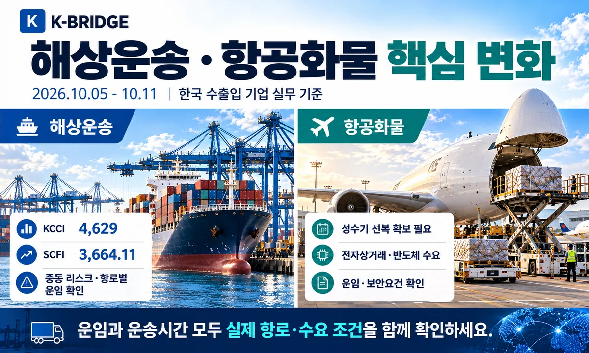
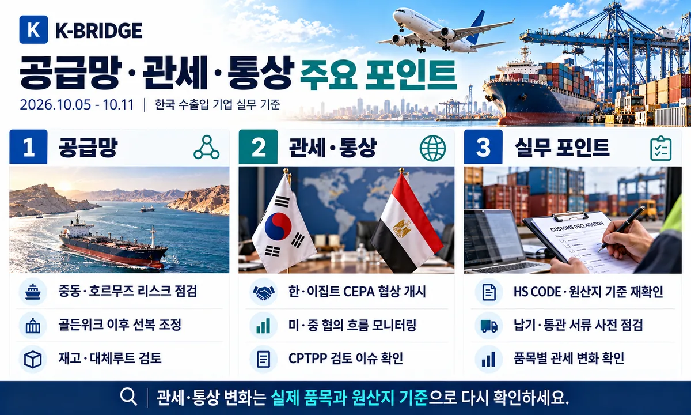
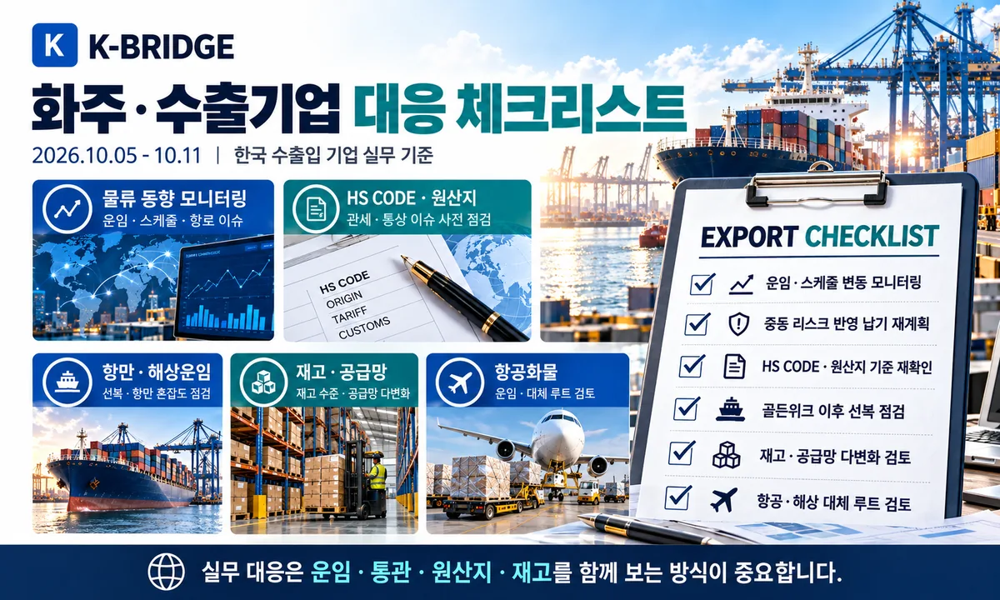

운임지수와 중동 공급망 변수가 동시에 바뀌면 무엇부터 확인할까요?
한국발 운임과 항로·보험·원유 관련 변수를 분리한 뒤 실제 화물에 필요한 대응을 정리합니다.
이 글의 핵심 부분부터 살펴보기41주차, 수출입 기업이 먼저 알아야 할 핵심
이번 주에는 전체 컨테이너 운임이 약보합이지만 항로별 격차가 크다는 점과 호르무즈 안전 리스크를 함께 봐야 합니다. KCCI는 4,629(-1.05%), SCFI는 3,664.11(+0.05%), CCFI는 1,912.38(-0.6%)였고 Drewry WCI는 40ft당 4,351달러(-2%)를 기록했습니다. 중국 골든위크 이후 선복 변경과 중동 보험·운송비용을 확인하고, 한·이집트 CEPA·CPTPP 관련 협상 발표를 실제 관세 발효와 혼동하지 않아야 합니다.

KEY TAKEAWAYS / 핵심 실무 포인트
컨테이너 운임지수는 항로별로 엇갈리고, 호르무즈에서는 운송비와 보험 리스크가 계속되고 있습니다. 발표된 FTA 협상·협력은 시행된 관세 규정과 구분해서 확인해야 합니다.
41주차 시장 한눈에 보기
지수는 같은 날 발표되는 것이 아닙니다. 발표일·출발지·컨테이너 기준을 구분해서 읽어야 실제 견적과 비교할 수 있습니다.
| 지표 | 기준일·수치 | 전주 대비 | 확인 포인트 |
|---|---|---|---|
| KCCI / 한국발 | 10/06 · 4,629 | -1.05% | 동남아 +16.61% / 유럽 -5.23% |
| SCFI / 상하이발 | 10/09 · 3,664.11 | +0.05% | 종합지수 보합 |
| CCFI / 중국 수출 | 10/09 · 1,912.38 | -0.6% | 한국항로 -9.0% |
| Drewry WCI | 10/08 · $4,351/FEU | -2.0% | 주요 동서항로 운임 약세 |
| IATA 글로벌 CTK | 8월 · +4.4% YoY | 최신 공개 월간치 | 9월 통계로 혼동 금지 |
호르무즈·원유·공급망
호르무즈 통항 다시 감소 / 10월 7일 가시 통항 7척
Reuters가 Kpler 자료를 인용한 10월 8일 보도에 따르면 10월 7일 호르무즈 가시 통항 상품선은 7척으로 7월 23일 이후 최저 수준이었고, 8일에는 10척으로 일부 회복했습니다. AIS를 끄고 운항하는 선박이 있어 실제 통항량과는 차이가 있을 수 있습니다. 중동향 화물은 War Risk, 선박 가용성, ETA 버퍼를 별도 확인해야 합니다.
원유 공급은 있어도 유조선 운송비 부담 증가
10월 9일 Reuters는 미국 걸프만~아시아 초대형유조선(VLCC) 용선료가 높은 수준에 도달하며 아시아 정유사의 원유 조달 선택에 영향을 주고 있다고 보도했습니다. 원유 가격뿐 아니라 톤당 운송비·보험료·STS 환적비를 합쳐 비교해야 합니다. 한국 정유·석화업에도 적용되는 비용 점검 포인트입니다.
10월 11일 오만만 선박 충돌 사건 / 항행안전 재점검
10월 11일 Reuters는 미군이 이란 관련 봉쇄 경고에 불응한 상선의 추진능력을 무력화했다고 보도했습니다. 사건과 관련한 당사자 발표 및 후속 사실관계는 달라질 수 있으므로 운송계약상 제재·보험·통항제한 조항을 다시 확인해야 합니다. 10월 11일 보도 기준입니다.
한·사우디 첨단산업 협력 / 중동 프로젝트 물류 가능성
산업통상부는 10월 6일 한·사우디 간 미래 첨단산업 비즈니스 협력 강화를 발표했습니다. 프로젝트 기자재·산업설비·현지 인프라 관련 화주는 사업별 실제 발주·운송 조건을 확인하되, 협력 발표만으로 특정 물동량이 확정됐다고 판단하지 않도록 유의해야 합니다.
해상운임·선복·골든위크
KCCI 4,629 / 한국발 종합운임 1.05% 하락
한국해양진흥공사 10월 6일 KCCI는 4,629로 직전 4,678에서 1.05% 하락했습니다. 다만 미주 서안은 2.43%, 동남아는 16.61% 상승한 반면 유럽은 5.23%, 중남미 동안은 12.14% 하락했습니다. 평균지수만 보고 한국발 전체 운임이 동일하게 떨어졌다고 판단하면 안 됩니다.
SCFI 3,664.11 / 상하이발 시장 사실상 보합
상하이해운거래소가 10월 9일 발표한 SCFI 종합지수는 3,664.11로 직전 9월 30일 3,662.30보다 1.81포인트 상승(약 0.05%)했습니다. 골든위크 전후에는 실선적 가능한 항차와 보관·반출 일정이 지수만큼 중요합니다.
CCFI 1,912.38 / 한국항로 -9.0%, 동남아 +3.8%
중국수출컨테이너운임지수 CCFI는 10월 9일 1,912.38(-0.6%)을 기록했습니다. 세부적으로 한국항로는 9.0% 하락했지만 동남아는 3.8%, 미주 동안은 2.4% 상승했습니다. KCCI와 CCFI는 출발지·표본과 산정 방식이 달라 같은 한국 관련 항로라도 등락 방향이 다를 수 있습니다.
Drewry WCI $4,351 / 주요 동서항로 운임 2% 하락
Drewry 10월 8일 World Container Index는 40ft당 4,351달러(-2%)였습니다. 상하이~로스앤젤레스는 7,624달러(-3%), 상하이~뉴욕은 10,220달러(-2%), 상하이~로테르담은 3,337달러(-2%)로 집계됐습니다. 이는 지수의 기준 구간이며 한국발 개별 견적과는 다릅니다.
골든위크 이후 블랭크 세일링과 선복 재배치
중국 연휴가 끝나면서 출하가 재개되지만, 선사들은 취소항차와 공급조정으로 운임 방어를 시도하고 있습니다. Drewry는 10월 9일 기준 향후 5주(42~46주)에 주요 동서항로의 34개 블랭크 세일링을 전망했습니다. 부산 환적·중국발 혼재 물량은 예약확정, CY/CFS 컷오프, 실제 서비스 로테이션을 확인해야 합니다.
수에즈 복귀 확대 / 운항시간 단축과 보안 위험 병존
주요 선사의 수에즈 경유 서비스 복귀는 희망봉 우회보다 운항시간을 줄일 수 있지만, 홍해 보안 위험과 선박 배치 변화가 동시에 남아 있습니다. 유럽향 계약에서는 예상 T/T를 고정하지 말고 선박별 실제 항로와 환적항을 다시 확인하는 것이 안전합니다.

항공화물·긴급운송
IATA 최신 월간 공식치 / 8월 항공화물 수요 +4.4%
10월 11일 현재 확인 가능한 IATA 최신 공개 월간 발표는 8월 글로벌 항공화물 수요(CTK) 전년 대비 +4.4%입니다(발표 9월 29일). 9월 실적을 41주차 확정치로 혼동하지 않도록 발표일과 대상월을 구분했습니다. 항공 운임은 노선·중량단계·할증료별 개별 확인이 필요합니다.
중국 연휴 후 항공 스페이스 / 반도체·전자부품 납기 대응
골든위크 이후 중국발 공장 출하가 재개되는 구간에서는 해상 선적 지연을 항공으로 전환하는 긴급화물이 발생할 수 있습니다. 한국발 미주·아시아행 전자·고가화물은 메인편과 대체편, C/W(운임중량), 보안검색, 배터리 포함 여부, 마감시간을 함께 확인해야 합니다. 이는 주간 수급 변화에 따른 실무 점검사항입니다.

관세·통상·조달국 다변화
한·이집트 CEPA 협상 개시 / 수에즈·조선 물류 협력
10월 8일 정부는 한·이집트 CEPA 협상 개시를 선언하고 친환경 선박수리·인력양성·LNG 벙커링 등의 조선 협력 MOU를 체결했습니다. 이집트는 수에즈운하와 북아프리카 물류를 연결하는 거점입니다. 다만 CEPA는 협상 개시 단계로, 협정 특혜관세가 이미 적용되는 것은 아닙니다.
대미 통상 현안·한중 FTA 후속·인도 산단 추진 점검
10월 8일 제60차 통상추진위원회는 대미 통상 현안, 한·중 FTA 서비스·투자 후속협상, 인도 한국기업 전용산단을 논의했습니다. 중국·인도와 연결된 수출기업은 통관세율과 투자·진출환경을 구분해 검토하고 최종 발표된 품목별 법령을 기준으로 거래조건을 정해야 합니다.
CPTPP 가입 검토 / 서비스업계 의견 수렴
산업통상부는 10월 8일 CPTPP 가입 검토와 관련해 서비스업계 간담회를 열었습니다. 운송·물류기업에는 국경 간 서비스 시장개방과 투자환경이 중요하지만, 가입이 확정된 것은 아니므로 현행 FTA 원산지·관세규정이 그대로 적용됩니다.
구조적 과잉생산 공동성명 / 철강 통상 위험 지속
정부는 10월 8일 주요국과 구조적 과잉생산 및 생산능력 대응 관련 공동성명 참여를 발표했습니다. 철강·소재 수출입 기업은 향후 무역구제조치 논의와 개별국 반덤핑·상계관세 적용 여부를 분리해 살펴야 합니다. 공동성명 자체가 신규 관세율을 즉시 부과하는 것은 아닙니다.
K-GX 추진 / 탄소정보가 공급망 경쟁력으로
10월 7일 산업통상부는 산업 녹색전환(K-GX) 추진 방향을 발표했습니다. 제조업 공급망에서 탄소배출 데이터와 저탄소 소재·연료 기준의 중요성이 높아질 수 있습니다. EU CBAM 대상 품목·탄소배출량 산정 기준은 실제 적용법과 신고주기에 맞춰 확인해야 합니다.

화주·수출기업 대응 체크리스트
- 확인: 한국발은 KCCI 및 선사별 All-in 운임을 비교합니다.
- 확인: 중국 골든위크 이후 선복·컷오프·CY/CFS 휴무 영향을 점검합니다.
- 확인: 호르무즈·오만만은 War Risk·보험·AIS 정책·ETA를 선사에 확인합니다.
- 확인: 유럽향은 실제 수에즈 경유 여부와 환적 계획을 재확인합니다.
- 확인: 항공은 운임중량(C/W), 주간 스페이스, 대체편을 함께 검토합니다.
- 확인: 한·이집트 CEPA는 발효 전 관세 특혜를 적용하지 않습니다.
- 확인: CPTPP·한중 FTA 후속협상은 확정 조치와 검토 단계를 구분합니다.
- 확인: 철강·배터리 등은 공급처별 원산지·탄소자료를 정리합니다.
실무 결론: 지수 하락만 보고 운임 인하를 기대하기보다 실제 항차, 운임의 포함항목, 보험·통관·원산지 조건을 함께 검토하세요.
자주 묻는 질문
Q. 41주차 KCCI 운임지수는 얼마인가요?
Q. SCFI와 CCFI가 왜 다르게 움직이나요?
Q. 호르무즈 해협은 정상 운항 중인가요?
Q. 한·이집트 CEPA 특혜관세를 당장 적용할 수 있나요?
NEXT STEP
이 글과 함께 보면 좋은 자료
41주차 운임·일정·통관 조건을 함께 확인하세요
케이브릿지는 한국 수출입기업의 해상·항공·통관·국내운송을 연결해 실제 운임과 운송기간, 위험구간과 품목조건을 함께 검토합니다.